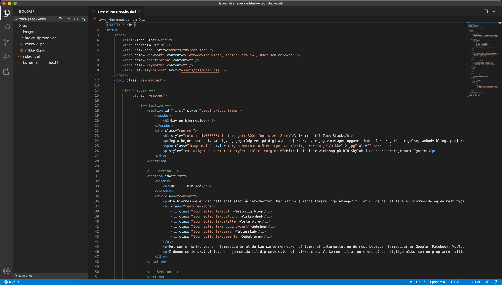
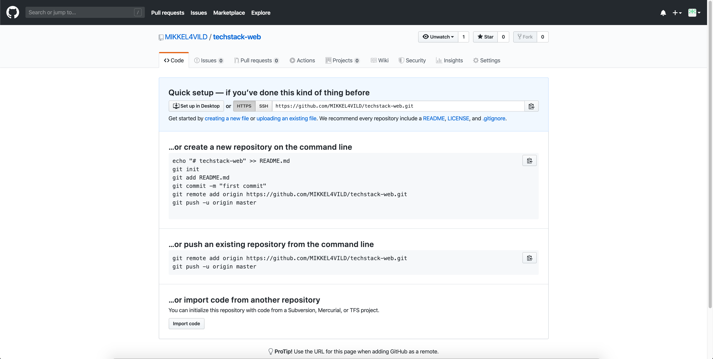

Visual Studio Code
Jeg bruger Visual Studio Code som teksteditor for min kode. Du kan også vælge at bruge Atom, Sublime eller WebStorm. Du skal bruge teksteditoren til at holde styr på dine projektfiler.
Lav en mappe på din computer, hvor du gerne vil opbevare dine projekter. Jeg har en mappe som hedder 'dev' og inde i den mappe har jeg forskellige mapper med mine projekter.
Når du åbner Visual Studio Code, skal du trykke på 'New file' og gemme den i en mappe eller 'Open folder' for at åbne en mappe. På billedet kan du se mit projekt 'techstack-web'.

Google Chrome
Jeg bruger Google Chrome som min browser. Det gør jeg fordi at den har nogle gode udviklerværktøjer, som kan bruges til at inspicere og undersøge hjemmesider.
Når du er på en hjemmeside i Google Chrome, kan du højreklikke og trykke 'Vis sidens kilde' for at se hjemmesidens kode eller 'Undersøg' for at tilgå udviklerværktøjerne i browseren.
Tryk på 'Undersøg' og under 'Elements' kan du se alle HTML komponenter som hjemmesiden består af og når du vælger et HTML element kan du se stylingen med CSS under 'Styles'.

Git og GitHub
Nu kan det godt blive lidt kompliceret. Jeg bruger Git som værktøj til versionskontrol og GitHub til at opbevare koden for mine projekter. Så kan jeg dele koden til mit projekt med et link.
Først skal du oprette en bruger på GitHub og lave et nyt 'repository' med det samme navn som din mappe på computeren. Mit projekt hedder 'techstack-web' og det er 'Public'.
Når du har oprettet et projekt på GitHub kan du anvende Git kommandoer i 'command prompt' med Windows og 'Terminal' med MacOS til at uploade dine projektfiler til GitHub.
cd dev/techstack-web
git init
git add .
git commit -m "første commit"
git remote add origin https://github.com/MIKKEL4VILD/techstack-web.git
git push -u origin master
